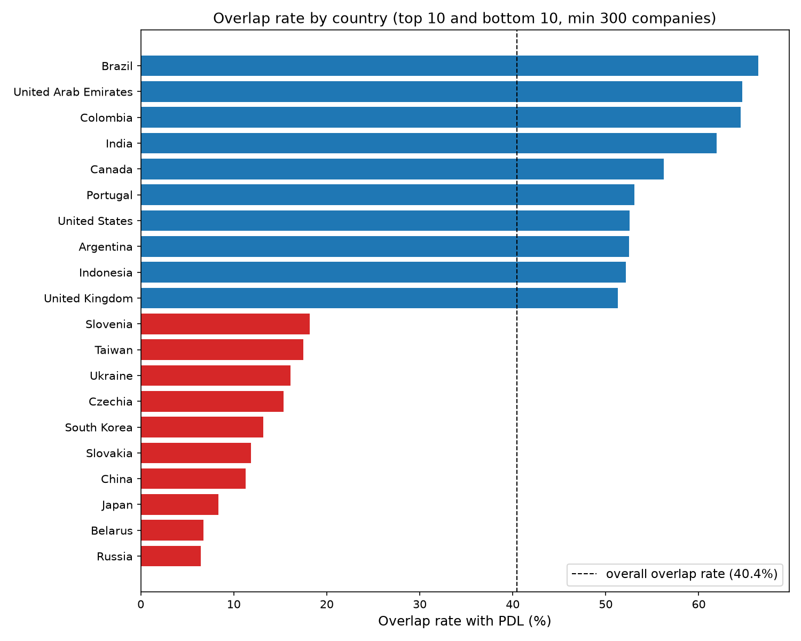

WHERE IT BREAKS DOWN
Overlap rate ranges from 66% in Brazil down to 6% in Russia, a 10× spread. The Americas, India, and the UK are well covered. East Asia and Eastern Europe are not.
Germany, GOI's #2 country by volume, sits at just 29.8% overlap, well below the 40.4% average.
